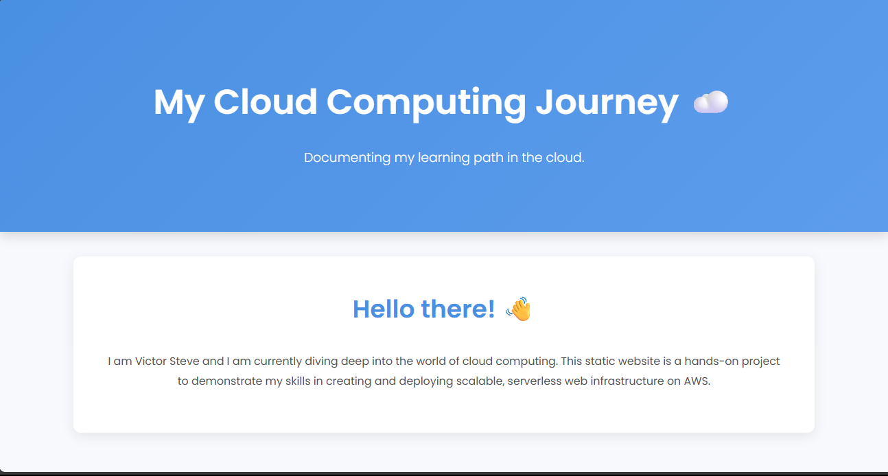

Hello there! üëã
I am Victor Steve and I am currently diving deep into the world of cloud computing. This static website is a hands-on project to demonstrate my skills in creating and deploying scalable, serverless web infrastructure on AWS.
My Cloud Computing Projects
üåê Project 1: Deploy a Static Website on AWS S3 with CloudFormation
This project was an end-to-end exercise in provisioning and managing cloud infrastructure as code (IaC).
- Tools Used: AWS S3, AWS CloudFormation, AWS CLI
- What I Learned: AWS storage fundamentals, IaC with CloudFormation, and basic CLI commands for deployment.
Steps I Followed:
- Created a simple HTML/CSS website.
- Wrote a CloudFormation template (YAML) to automate S3 bucket creation and configuration.
- Used the AWS CLI to deploy the template and upload the website files.
- Tested the website by accessing its public URL.

üê≥ Project 2: Containerize a Flask App with Docker on AWS EC2 and deploy using Terraform
This project focused on containerization and automating infrastructure provisioning for a web application.
- Tools Used: Docker, Terraform, AWS EC2, GitHub, SSH
- What I Learned: Containerizing applications with Docker, writing Terraform scripts to provision cloud resources, and performing manual CI/CD for updates.
Steps I Followed:
- Created a Python Flask app and wrote a Dockerfile to containerize it.
- Wrote a Terraform script to create an AWS EC2 instance and its security group.
- Configured a user data script to automatically install Docker and Git, clone the GitHub repository, build a Docker image, and run the container on instance launch.
- Troubleshot and resolved permission denied errors related to the Docker daemon and Git repository ownership on the EC2 instance.
üìä Project 3: Automate AWS Resource Monitoring with Python and CloudWatch
This project involved building an automated, serverless monitoring and alerting system for an AWS resource.
- Tools Used: Python (Boto3), AWS CloudWatch, AWS SNS, AWS Lambda, AWS EventBridge
- What I Learned: Programmatic monitoring with Python and Boto3, configuring CloudWatch alarms and dashboards, and using serverless functions for event-driven automation.
Steps I Followed:
- Set up a CloudWatch Dashboard to monitor EC2 instance CPU usage and an SNS topic for alerts.
- Wrote a Python script using boto3 to fetch CPU utilization data and publish messages to the SNS topic.
- Packaged the script and dependencies for deployment as an AWS Lambda function.
- Configured the Lambda function with the necessary IAM role permissions.
- Created a scheduled rule in EventBridge to trigger the Lambda function for automated monitoring.